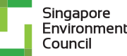
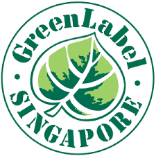

Enerstay client support
Consultancy, training, gap assessment, calculations, evidence preparation and assessment work within the agreed assignment scope.
Partnership & Pilot Scheme
Enerstay has signed a partnership agreement with the Singapore Environment Council (SEC) for sustainability-related services. The ENERSTAY TRUSTMARK™ remains a separate private pilot with controlled governance.
Signed Partnership
Signed on 7 September 2026, the partnership establishes a structured route for promotion, referral and delivery of sustainability-related services while keeping certification and labelling decisions independent.

Signed business partnerSEC independently administers its certification, verification, labelling and sustainability programmes.
Visit SEC
SEC-administered programmeAn ISO 14024 Type 1 ecolabel pathway for eligible products, with approval and label administration retained by SEC.
Open the SGLS websiteConsultancy, training, gap assessment, calculations, evidence preparation and assessment work within the agreed assignment scope.
Clients can be routed to the appropriate Enerstay support or SEC-administered certification, verification and labelling programme.
SEC retains sole authority for review, approval, issuance, renewal, suspension and withdrawal of its certifications and labels.
The partnership does not certify Enerstay, a client or a product, and it does not guarantee a Green Label outcome. Every application remains subject to the applicable SEC criteria, independent review and formal decision.
Assessment Scope
Each application is reviewed against its approved subject matter, boundary, evidence requirements and intended claim.
Training or equivalent experience, examination, case work and continuing competence.
Product carbon footprint, life-cycle data, material traceability and supporting test evidence.
GHG inventories, energy procurement, supplier due diligence, governance and sustainability evidence.
Project design, baseline and monitoring methodology, independent MRV and milestone evidence.
Proposed Themes
Final criteria, eligibility and mark wording will be confirmed before each pilot pathway opens.
Scheme Lifecycle
The proposed lifecycle assigns intake, assessment, technical review, approval and ongoing control to defined functions.
Governance
Controls scheme documents, applications, licences, surveillance records and public information.
Reviews technical sufficiency independently from the initial assessment team.
Oversees conflict safeguards and separation between client acquisition and final approval.
The ENERSTAY TRUSTMARK remains a separate private pilot in governance review. The SEC partnership does not make the Trustmark an SEC certification, Singapore Green Label, government accreditation or ISO certification. Pilot eligibility and final mark-use rules will be confirmed before applications open.
Pilot Interest
Share the proposed subject and intended claim. The submission records interest only and is not an application or an assurance engagement.